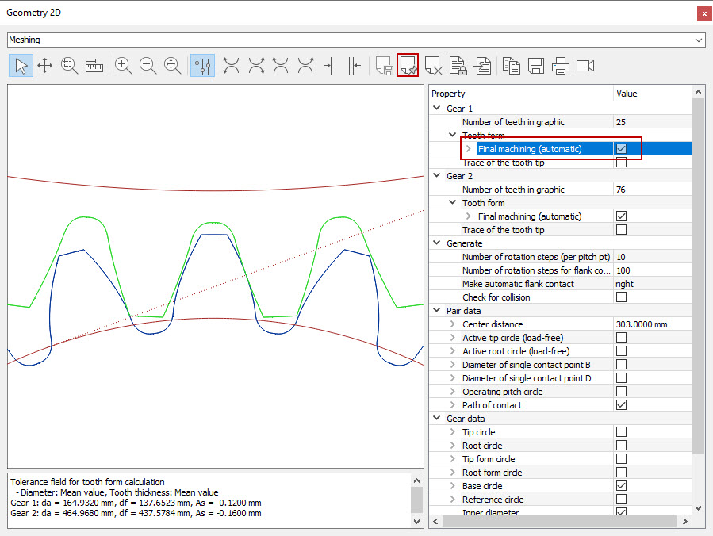
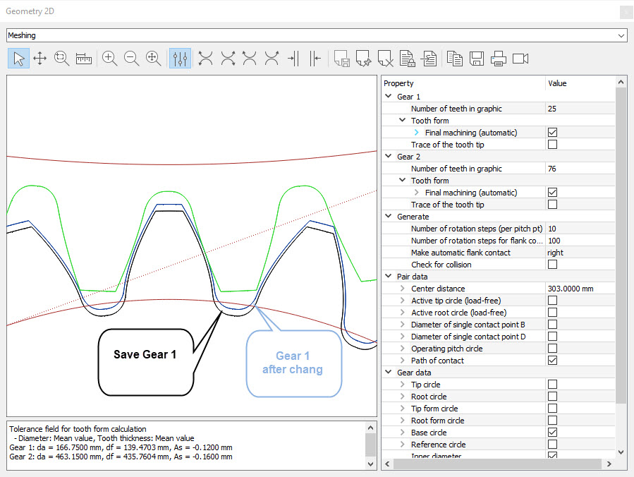

|
|
|


属性
在"属性"中，您可以显示或隐藏图形中的元素，并更改其颜色和线型。根据图形的不同，您可以进行不同的修改：对于图表等，可以修改数值范围和单位以匹配坐标轴；对于啮合图形，可以更改中心距。

图4.7：图形属性
如果显示了属性，您会在工具栏中看到另外三个图标。您可以使用它们将图形中的曲线以文本形式保存，或直接保存到图形中。
将曲线保存为文本
将属性中选定的曲线的坐标存储在文本文件中。这使得将曲线传输到例如Excel文件中变得非常容易。
保存曲线
将属性中选定的曲线存储到图形中。此功能非常适合在更改计算参数时比较图形输出。
删除记忆
从记忆中删除曲线。

图 4.8: 带有保存和不同曲线的图形
Properties
In Properties, you can display or hide elements in a graphic and change its colors and line styles. You can make different modifications, depending on the graphic: for diagrams and such like, you can modify the value ranges and units to match the axes, or, for a meshing, you can change the center distance.
Figure 4.7: Graphic properties
If the properties are displayed, you will see three other icons in the tool bar. You use them to store curves in a graphic as text, or in the graphic itself.
Save curve as text
Stores the coordinates of the curve selected in Properties in a text file. This makes it easy to transfer curves to, for example, an Excel file.
Save curve
Stores the curve selected in Properties in the graphic. This function is ideal for comparing the graphical outputs of a calculation while you change its parameters.
Delete memory
Deletes the curve from the memory.
Figure 4.8: Graphics with saved and different curves